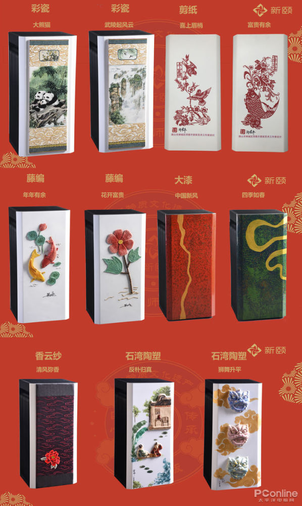

新旧交融
>
新颐小白3.0空气净化器非遗版发布：传统文化与当代科技的辉映交融
新颐小白3.0空气净化器非遗版发布：传统文化与当代科技的辉映交融
2019-12-31 16:30 PConline 资讯
未来的空气净化器应该是什么样子？是否还像以前那样躲在角落里默默无闻？或许现在已有了新的答案。12月30日，“匠新传承|新颐×非遗版大师作品鉴赏会”在佛山市东方印象艺术馆举行，推出了新款新颐小白3.0空气净化器非遗版，展现了空气净化器不一样的风采。
本次鉴赏会由由广州新颐科技有限公司、广东岭南符号文化发展有限公司主办，佛山市艺术文化创新协会手工艺产业委员会协办。这是一场传统文化与当代科技碰撞融合的盛会，藤编、石湾陶塑、香云纱、剪纸、广州彩瓷、大漆等6种来自岭南传统非遗工艺，与新颐旗舰空气净化器小白3.0精妙结合一起，不仅创新了以往空气净化器行业单调的外观，更是中华优秀传统文化传承和发扬的体现。

中国室内空气净化品牌集群常务副主席顾士明，佛山市艺术文化创新协会手工艺产业委员会理事长、广东省工艺美术大师黄强华，广东省非物质文化遗产项目保护中心民俗专家、佛山市民间文艺家协会首席主席梁诗裕等相关领域的权威专家和手工艺大师出席了此次鉴赏会并发表讲话。专家和大师们高度赞赏了新颐科技本次的创新设计，认为这种跨界融合，不仅体现了新颐对中华民族优秀文化的自信和传承，也让多彩的非遗手工艺能随现代商业文明一起延绵发展。
“用优秀传统文化赋能现代科技产品，用传统文化讲好中国制造故事。”广州新颐科技有限公司总经理梁令坚表示，希望通过这样创新的跨界融合模式，让非遗文化和空气净化器携手走进千家万户，既能传承发扬传统文化，也让科技产品为家居增色不少。
新颐小白3.0是一款净化性能强劲的空气净化器，颗粒物CADR实测高达793m /h，甲醛CADR实测高达610m /h，并可装配加湿模块，是极富有创新力和实力的空净产品，前不久斩获了空净行业至高奖“南山奖”。这次推出的非遗版更联合了6种传统非遗工艺，在小白3.0面板上进行纯手工艺术性加工，不仅让新颐小白3.0继续保持强大的性能，更是让每一台空净都成为了精致的独一无二的非遗艺术手工作品。
总的来说，本次新颐科技推出的小白3.0非遗版，是令人眼前一亮的跨界合作，它重新赋予了空气净化器新的定义，让空气净化器不再是家中默默无闻净化空气的家电产品，而是摇身一变成与家居和谐共处的装饰艺术品。相信在新颐科技的带动下，会有更多传统文化和当代科技辉映交融的家电艺术品出炉，让中华传统文化以新的形式“随清风”走进千家万户。